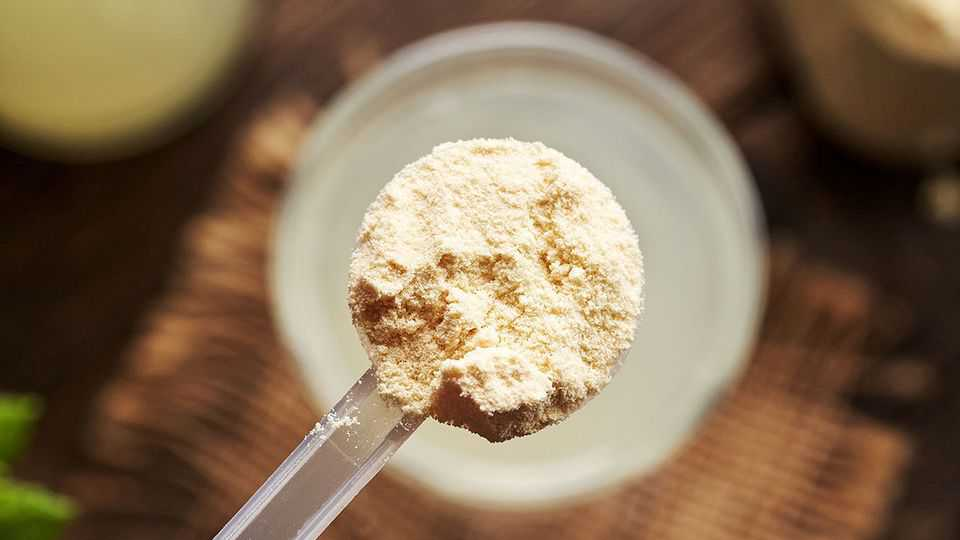

From protein to matcha, food fads spread faster than ever
Supply chains struggle to keep up

Sep 3rd 2026
PIGS WERE once the biggest consumers of whey, a byproduct of cheesemaking. Now farmers can scarcely afford it. Demand for whey concentrate, a common ingredient in gym shakes, has soared amid the craze for consuming more protein. Dairies have not scaled up cheese production to match. The price of whey protein thus rose fivefold in the three years to June, according to Vesper, a research firm. Cottage cheese, which TikTok influencers also recommend for bulking up, has seen a similar shortage.
Both cases illustrate a new problem for the food-and-drinks industry. Online trends can build demand for ingredients faster than ever before, but farms and factories cannot scale production at the same speed. Firms are adapting by learning to anticipate trends and ride them out before consumers move on.
Food fads are hardly new. Pineapples were so coveted in Georgian England that rental shops opened peddling display fruits. Swiss fondue, a hit with Americans in the 1960s and 70s, resulted in millions of cheese-melting pots that now languish in cupboards. Today, though, social media spreads such trends across the world in weeks. When a video of a pistachio-pastry chocolate bar made in Dubai went viral on TikTok in 2023, it was viewed more than 100m times. Months later top chocolatiers were selling their own versions, straining global pistachio production.
Food and drinks are especially prone to going viral. Grass-green matcha or violet ube lattes make for pleasing Instagram snaps. They are also cheap enough to be accessible. Bought once, even a $19 strawberry from Japan (another recent hit) won’t break the bank. Young buyers, who spend a good deal of their lives on social media, are also more inclined towards novelty, notes Dan Frommer, author of “The New Consumer”, a blog.
Explosive demand has overwhelmed supply chains. Tencha leaves, which are used to make matcha, nearly tripled in price between 2024 and 2025 amid surging interest in the drink. The bushes from which they come require years to grow. Hot markets also attract chancers. Rocky Xu, a matcha seller in Los Angeles, says that when he ran out last year, he found that the market had become crowded with middlemen. The newcomers—mainly Japanese entrepreneurs hoping to mediate between farmers and foreign buyers—pushed up prices.
Food companies are trying to cope in several ways. Anticipating trends as early as possible allows them to lock in suppliers before rivals do. Starbucks, an American coffee chain, started offering green-tea lattes in 2006, long before the matcha boom in the West. It popularised drinks with “popping pearls” in 2024, before bubble tea went mainstream. More recently it added a protein range to its coffees, which are now as popular as flat whites in Europe. Louise Direito, an executive at the chain, says that it has switched from relying on “small focus groups” to tracking “millions of customers shaping trends in real time” on the internet. “The challenge is knowing when to join the conversation, as well as when it’s too late,” she adds.
Collaborations also help. As spicy foods became all the rage in 2022, fast-food chains lined up to work with Fly by Jing, a trendy maker of chilli-oil. Shake Shack, a burger chain, built a whole chicken menu around it.
But not all fads are worth embracing. Starbucks’ olive-oil coffees were pulled from menus in America and Canada less than a year after their launch in 2024—amid complaints about laxative effects. ■